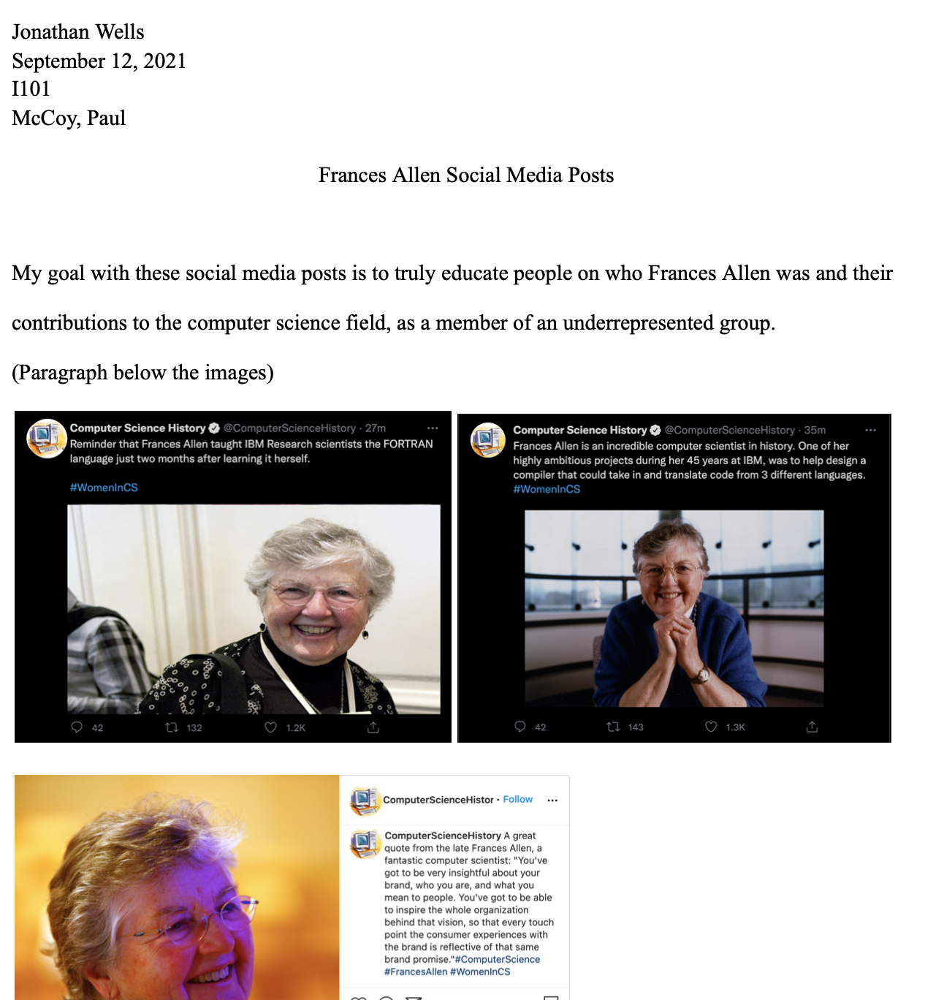
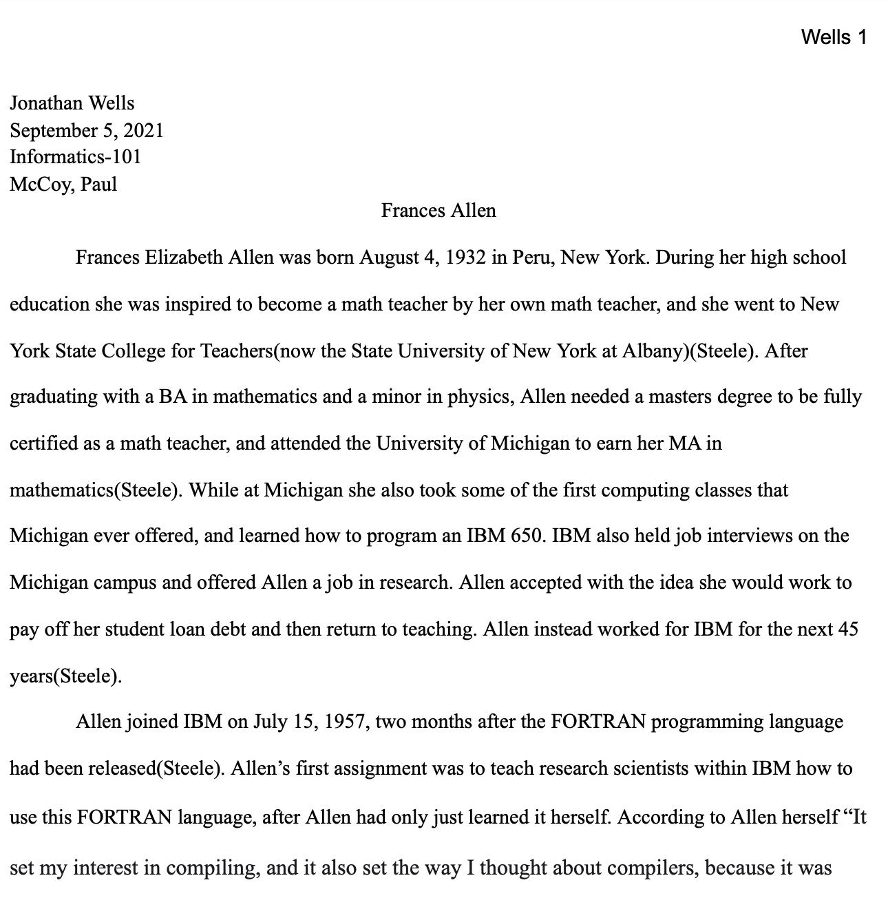

My name is Jonathan Wells and welcome to my homepage! I am a student at Indiana University in Bloomington. This is a webpage for my Informatics 101 class. This webpage contains some pictures of me, some examples of work that I have done for school, as well as some general knowledge about me. I hope you enjoy your time on this page, and learn a little bit about me in the process!
My name is Jonathan Wells. I am a freshman currently majoring in Informatics, but I'm supposed to be majoring in computer science, so maybe this class will change my mind and keep me as an informatics major. I grew up in Bloomington, Illinois, so I've gone from Bloomington to Bloomington to come to Indiana University. In high school I played golf for 4 years, and soccer for my senior year, because Covid moved it to spring, and since golf was fall, and soccer was spring, I was able to play them both in the same year. I decided to attend Indiana University because I had heard good things about the Luddy School. My goals in the future include working for a company in a computer science field. I am always motivated by seeing the technology around me every day continue to improve and that inspires me to try to do the same.
— Jonathan Wells (@jonathan_wells2) September 30, 2020
Here is where I want to show off some of the work I have done for school so far.
My first project is for Informatics, where I photoshopped some social media posts into posts about a great female Computer Scientist Frances Allen, and then had to write a little bit about her and those posts. Here is the link to the document
My second project is also for Informatics, where I wrote a small essay about two women in computer science, Frances Allen and Sophie Wilson, trying to highlight their contributions to the computer science field, and trying to pick one to do a project on. Here is the link to the document
Layout by Skeleton.
Also using the Twitter API.